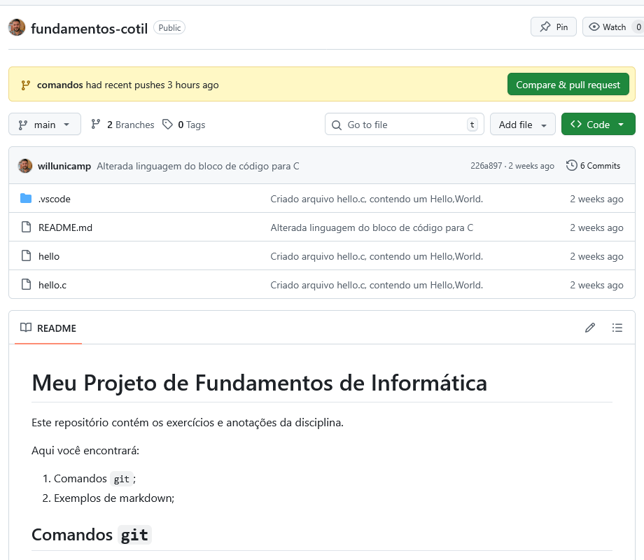
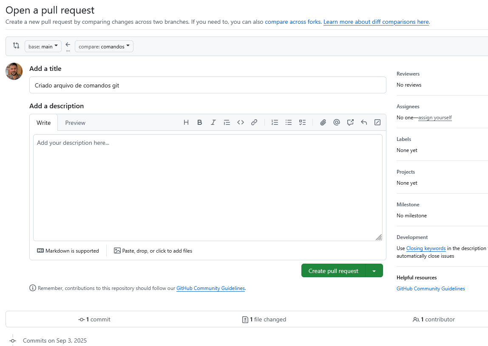
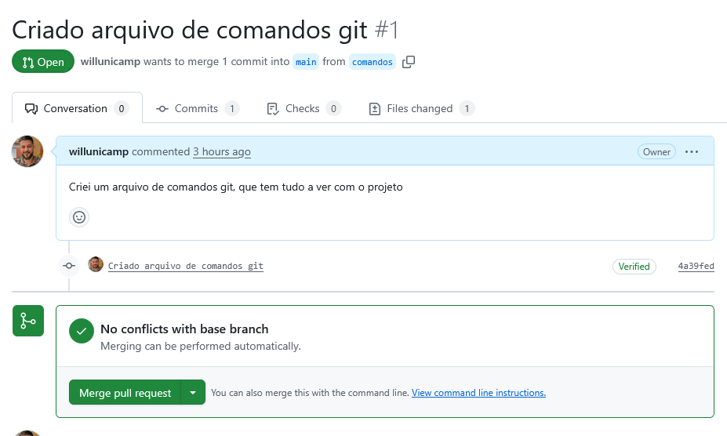
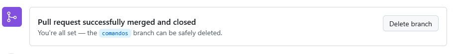
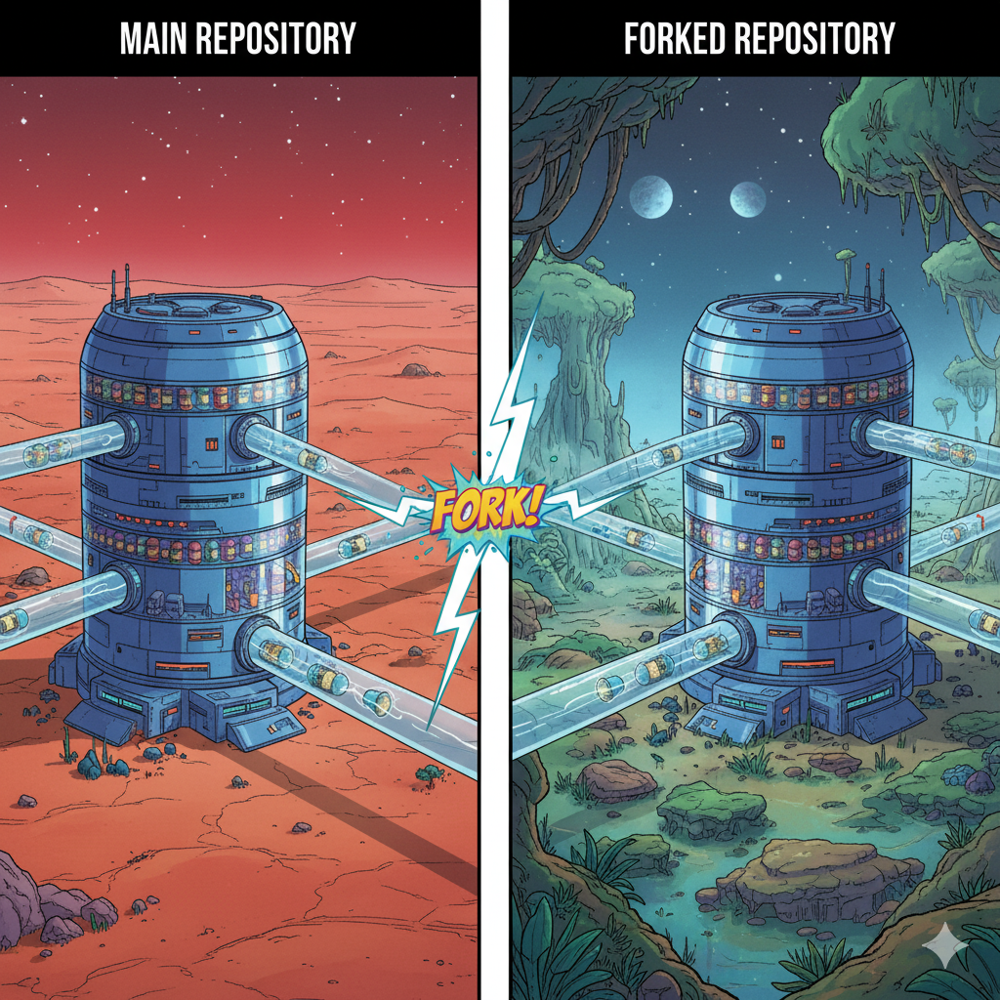
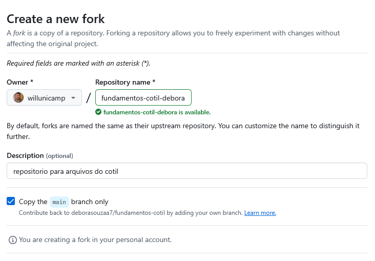
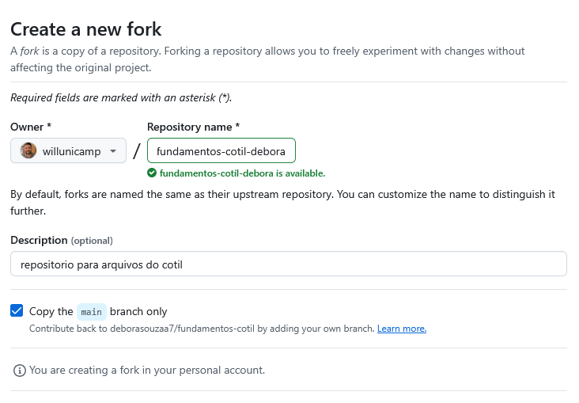
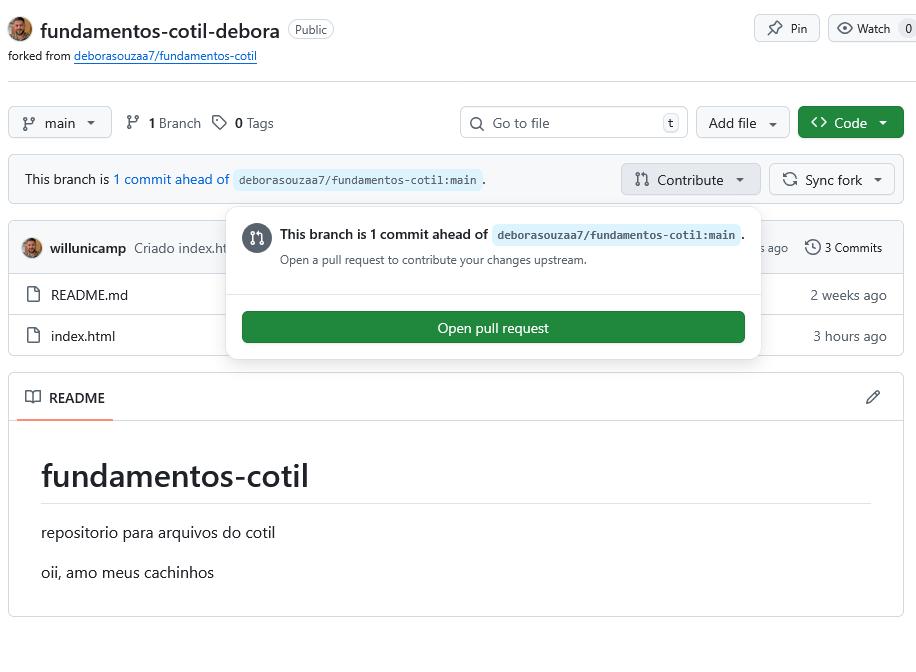

Aula 4
Fundamentos de Informática
Unindo Mundos: Pull Requests & Merge
Aprendendo a colaborar e integrar código de forma profissional.
Recapitulando: Onde Paramos?
Na última aula, criamos uma branch feature/comandos-git e adicionamos um novo arquivo nela, trabalhando de forma segura e isolada da nossa branch principal (main).
O Desafio Atual
Nossa nova funcionalidade está pronta na branch. E agora?
Como trazemos essa inovação, que está em uma "realidade paralela" (nossa branch), de volta para a linha do tempo principal (main) para que todos possam usar?
O que é um Pull Request (PR)?
É uma solicitação formal no GitHub para "puxar" (pull) as alterações de uma branch para outra. É o coração do trabalho em equipe.
Analogia: Revisão de Trabalho em Grupo
Pense que você escreveu sua parte de um trabalho (em sua branch). Antes de juntar com o resto, você envia para seus colegas revisarem. O Pull Request é esse momento de revisão, discussão e aprovação.
O Fluxo do Pull Request (Interativo)
Vamos ver o passo a passo de como um Pull Request une as duas realidades.
Mãos à Obra: Abrindo Nosso PR
Vamos levar nossa página de comandos para a branch main!
Acesse a página do seu repositório no GitHub. Você provavelmente verá um aviso amarelo sugerindo a criação de um Pull Request. Vamos usá-lo!
Preenchendo o Formulário do PR
Ao clicar no botão, você verá esta tela. É o formulário do nosso pedido de revisão. O GitHub já preenche o título e a descrição com base no nosso último commit.
Confirme que a base é main e o comparativo é feature/comandos-git, e clique em "Create pull request".
A Tela de Revisão
Esta página é o centro de discussões. Aqui, sua equipe poderia deixar comentários, sugerir mudanças e, finalmente, aprovar o seu trabalho.
Como estamos trabalhando sozinhos, nós mesmos vamos fazer o merge. Clique no botão verde "Merge pull request" e depois em "Confirm merge".
Missão Cumprida (no GitHub)!
Parabéns! Suas alterações agora fazem parte da branch main.
Volte para a página principal do seu repositório (clicando na aba <> Code) e veja que o seu novo arquivo agora está lá!
Faxina: Apagando a Branch
Após o merge, a branch de feature cumpriu seu propósito. É uma boa prática apagá-la para manter o repositório limpo. O GitHub facilita isso com um botão que aparece logo após o merge.
Passo Final: Sincronizando o Ambiente Local
Seu ambiente de trabalho (Codespace) ainda não sabe das novidades!
Precisamos "puxar" (pull) as atualizações da main do GitHub para o nosso Codespace. É o processo inverso do push.
$ git switch main
# 2. Baixe as atualizações do repositório remoto (GitHub)
$ git pull origin main
Você verá os arquivos atualizados aparecerem no seu explorador de arquivos!
Colaboração: O Modelo Fork & Pull Request
Até agora, trabalhamos no nosso próprio repositório. Mas como contribuir para o projeto de um colega, ou para um projeto de código aberto, onde não temos permissão para dar `push`?
A resposta: Fazendo um "Fork"!
O que é um Fork? (Sua Cópia Pessoal)
Um Fork é uma cópia completa de um repositório que fica na sua conta do GitHub. Você é o dono dessa cópia e tem total permissão para fazer o que quiser nela.
Analogia: A Fotocópia da Biblioteca
Pense no repositório original como um livro raro na biblioteca. Você não pode escrever nele. Ao fazer um "Fork", você tira uma fotocópia completa do livro. Agora, na sua cópia, você pode rabiscar, grifar e fazer anotações à vontade, sem afetar o original.
Passo 1: Fazendo o Fork
Como "fotocopiar" o repositório do seu colega.
Vá até a página do repositório que você quer contribuir (o repositório do Aluno A) e clique no botão "Fork", no canto superior direito.
![[Imagem da interface do GitHub mostrando o botão Fork]](img/botao-fork.png) 

Passo 2: Trabalhe na Sua Cópia
Agora o fluxo é o mesmo que você já conhece, mas no seu Fork!
Após o Fork, você terá uma cópia do projeto em `github.com/SEU_USUARIO/nome-do-projeto`. Agora siga os passos:
- Clone o SEU fork para o seu ambiente de trabalho.
- Crie uma nova branch para a sua alteração.
- Faça as modificações e realize os commits.
- Dê push das suas alterações para o SEU fork: `git push origin nome-da-sua-branch`
Passo 3: Solicitando o Pull Request (Entre Repositórios)
Com as alterações no seu Fork, volte para a página dele no GitHub. Assim como antes, um banner amarelo aparecerá, sugerindo criar um Pull Request.
A grande diferença está na tela seguinte:
Certifique-se de que o `base repository` é o repositório original (do Aluno A) e o `head repository` é o seu Fork. Clique em "Create pull request" para enviar sua sugestão!
Exercício: O PR no Repositório do Coleguinha!
Vamos praticar o fluxo de colaboração completo.
- Formem duplas: Definam quem será o Aluno A (Dono do Repositório) e o Aluno B (Colaborador).
- Aluno B: Vá ao repositório do Aluno A e faça um Fork.
- Aluno B: No seu Fork, crie uma branch, adicione no README.md uma linha escrito: "Participação: Seu nome", faça o commit e dê `push` para o seu Fork.
- Aluno B: Abra um Pull Request do seu Fork para o repositório original do Aluno A.
- Aluno A: Revise o PR, deixe um comentário e, por fim, faça o Merge!
- Invertam: Agora invertam os papéis.
Resumo da Aula
O que aprendemos hoje:
- O que é e por que usar um Pull Request para integrar código.
- O conceito de Fork como uma cópia pessoal de um projeto.
- Como colaborar com outros projetos usando o fluxo completo Fork & Pull Request.
- A importância de sincronizar nosso ambiente local com
git pull.
Próxima Aula: O Lado Sombrio do Merge
Unir as branches foi fácil. Mas... e se duas pessoas alteram a mesma linha de código ao mesmo tempo?